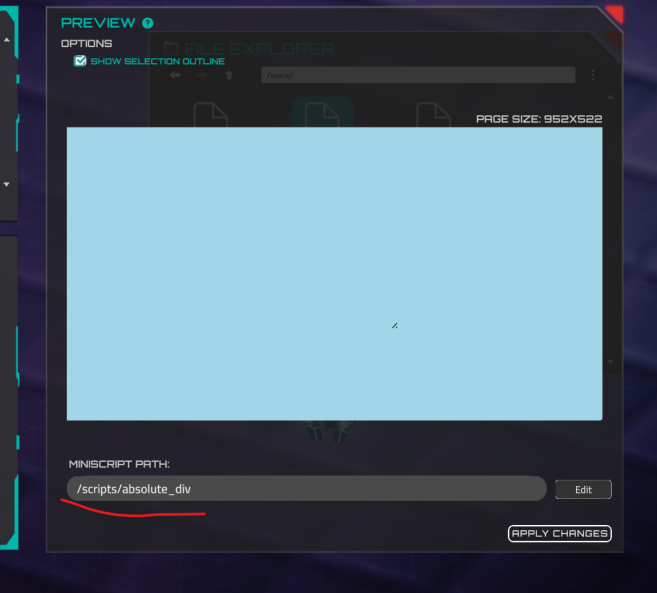
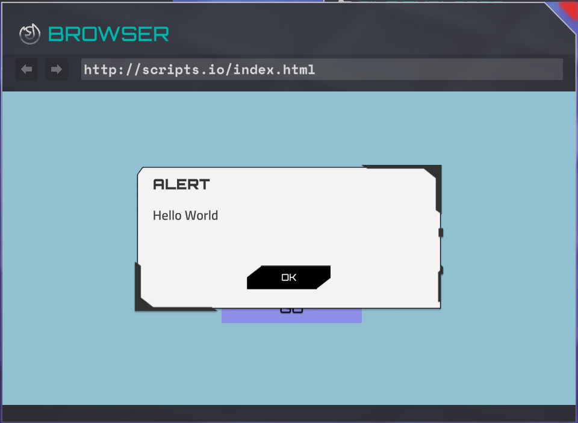
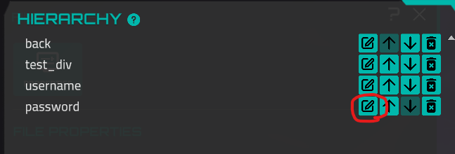

Miniscript for Web Browser¶
The web browser can also run Miniscript code for web pages. Each web page created in the Web Page Editor in the Forge can have its own script. The main purpose of the script is to manipulate the absoluteDiv elements.
You can manually add the <script> tag to the metadata section in the Forge:
However, the recommended way to set the script path is by using the Web Page Editor:

If the script is set, it will be launched when a page is opened. If the script is already running and another page is opened, the script will be automatically stopped. However, if the browser window is closed, the script will not be stopped in order to preserve the current page state in case the user opens the browser again.
Miniscript Functions for Browser¶
There are a bunch of miniscript functions to change the content page and interact with user. These functions are for invocation only in the scripts for the web browser.
browser_alert¶
The function displays text to the user. It has only one button (close the popup) and this button cannot be hidden. This function is not awaitable, so the next action will be performed immediately after the function is invoked, without waiting for the user to close the popup.
When the message is displayed, the user cannot navigate to another page or use the browser's navigation bar.
Parameters
| content | text or localization key for message body |
|---|---|
| title | optional, text or localization key for window title |
| ok | optional, text or localization key for close button |

browser_alert_dialog¶
Awaitable version of an alert with dialog options (two options). This function waits for user input and returns 0 if the user clicks "Cancel" or 1 if the user clicks "OK." Additionally, the "OK" and "Cancel" buttons can be hidden.
Parameters
| content | text or localization key for message body |
|---|---|
| title | optional, text or localization key for window title |
| ok | optional, text or localization key for OK (1) option. Set empty string to hide the button. |
| cancel | optional, text or localization key for CANCEL (0) option. Set empty string to hide the button. |
Example
choice = browser_alert_dialog("make your choice", "CHOICE", "red", "blue")
choice_text = "red"
if choice == 0 then
choice_text = "blue"
end if
browser_alert("User's choice is: " + choice_text)
browser_alter_absolute_div¶
The function changes the properties of an existing absolute div. It takes three mandatory parameters: id, attributeName, and value.
The id parameter must be unique for each absolute div on the page. You can view or set it in the Web Page Editor here:

Here is a list of possible attribute names and their values. Please note that the value is always a string, so it should be enclosed in quotes, even if it is a number. An example is provided where needed:
| attributeName | value |
|---|---|
| posX | number, X position from left top corner of the page |
| posY | number, Y position from left top corner of the page, multiplied by -1 |
| width | number, width of the block |
| height | number, height of the block |
| isForm | is current div a form (ability to type a text). Possible values: 0 (not a form), 1 (is a form) |
| backColor | background color in a hex format, if alpha section is not set, the block will be absolutelly opaque. |
| color | text color in a hex format, if alpha section is not set, the block will be absolutelly opaque. |
| alignment | text alignment, possible values: Left , Center , Right , Justified , Flush , Geometry |
| fontSize | number |
| text | content of the div (raw text or localization key), can be encoded |
| fontStyle | possible options: Regular , Bold , Mono |
| href | string, link address for the link or form button. Also can be # (block raycast option in the visual editor) |
| imageFileId | string, image name in the network file storage |
| formData | Usually it’s username and password for login forms. It’s encoded json: |
| `{ | |
| "data": | |
| [ | |
| { | |
| "formId": "input_username", | |
| "requiredFormValue": "admin" | |
| }, | |
| { | |
| "formId": "input_password", | |
| "requiredFormValue": "123456" | |
| }, | |
| ] | |
| }` | |
| But jsons contains invalid characters, so you have to use encoded version. Example: | |
browser_alter_absolute_div("button_login", "formData", "%7B%0A%20%20%22data%22%3A%20%0A%20%20%5B%0A%20%20%20%20%7B%0A%20%20%20%20%20%20%22formId%22%3A%20%22input_username%22%2C%0A%20%20%20%20%20%20%22requiredFormValue%22%3A%20%22admin%22%0A%20%20%20%20%7D%2C%0A%20%20%20%20%7B%0A%20%20%20%20%20%20%22formId%22%3A%20%22input_password%22%2C%0A%20%20%20%20%20%20%22requiredFormValue%22%3A%20%22123456%22%0A%20%20%20%20%7D%2C%0A%20%20%5D%0A%7D") |
Please note that when you change the text property, IP address substitution and device discovery will be invoked automatically.
browser_get_absolute_div¶
The function retrieves the value of a div property. If the property does not exist, it returns null. It always returns a string value, which you can convert using the to_number function or parse automatically.
Possible attributes:
| attributeName | result |
|---|---|
| posX | number, X position from left top corner of the page |
| posY | number, Y position from left top corner of the page, multiplied by -1 |
| width | number, width of the block |
| height | number, height of the block |
| isForm | is current div a form (ability to type a text). Possible values: 0 (not a form), 1 (is a form) |
| backColor | background color in a RGBA bytes format. Example: 255255255050 - this is white color with approximately 20 % alpha. You can parse the string if you need. |
| color | text color in a RGBA bytes format. Example: 255255255050 - this is white color with approximately 20 % alpha. You can parse the string if you need. |
| alignment | text alignment, possible values: Left , Center , Right , Justified , Flush , Geometry |
| fontSize | number |
| text | current content of the div (the text, that a user sees) |
| fontStyle | possible options: Regular , Bold , Mono |
| href | string, link address for the link or form button. Also can be # (block raycast option in the visual editor) |
browser_create_absolute_div¶
Creates a new absolute div with a unique ID. Returns 1 if the div was created, and 0 if it was not. Please note that the function will not create a div if another div with the same ID already exists.
browser_delete_absolute_div¶
Deletes the absolute div with the unique ID. Returns 1 if the deletion was successful, and 0 if it was not (i.e., if a div with such an ID was not found).
browser_dispatch_successful_command¶
The function to send a message that can be handled by the story runner (steps or story Minicript).
Parameters
| command | string, command name |
|---|---|
| device_name | optional, device name |
| argument | optional, argument |
In preview mode, you will see the sent message immediately after calling this function in the debug console. However, there is one drawback: you can only send a single argument, while handling user actions supports an array of arguments.
browser_get_fake_cookie_value¶
Get the value from global storage, which allows you to share data between sites. The data is preserved during mission gameplay. The behavior in the Forge scene differs from the real mission behavior, so you should test it in the mission preview.
If the value isn't set yet, it returns null.
browser_set_fake_cookie_value¶
Sets the value in the global data storage. The data is preserved during mission gameplay. The behavior in the Forge scene differs from the real mission behavior, so you should test it in the mission preview.
browser_get_url¶
Get detailed, structured information about the current page address. It returns a map with the following fields:
address = browser_get_url()
println(address.url) //the original URL of the page, as shown in the address bar
println(address.protocol) //http or https, for instance
println(address.host) //domain name (site.com)
println(address.port)
println(address.path) //the path to the current page (/index.html)
for parameter in address.query //array with get parameters (?param1=a¶m2=b)
println(parameter)
end for
browser_open_url¶
Opens the URL in the in-game web browser. Please note that this function will stop the currently running script and close any open alerts.
browser_was_button_click¶
Returns 1 if a user clicks on the absolute div. Works only if the href (link) value is set to # (Block Raycast checkbox in the visual web editor) and it is not a form. The value is reset to 0 after it is called.
Example
choice = 0
while 1
if browser_was_button_click("button_choice_1") then
choice = 1
break
end if
if browser_was_button_click("button_choice_2") then
choice = 2
break
end if
if browser_was_button_click("button_choice_3") then
choice = 3
break
end if
wait(0.1)
end while
browser_alert("User choice is: " + choice)
browser_clear_all_fake_cookies¶
Clears all values stored via browser_set_fake_cookie_value. After calling this function, all subsequent calls to browser_get_fake_cookie_value will return null until new values are set.
browser_get_form_value¶
Gets the user input (string) from the absolute div that is set as an input form.
Example